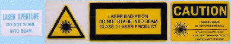
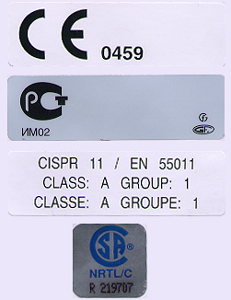
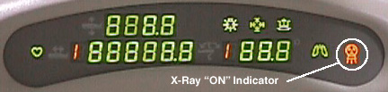
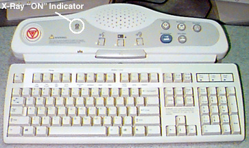
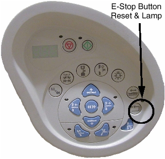
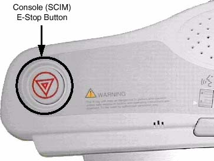
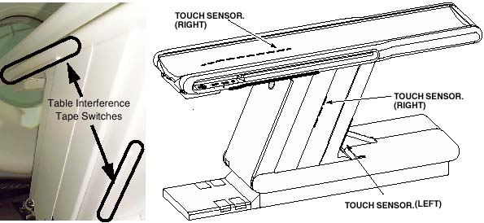
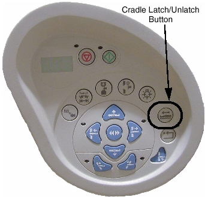

Operating Documentation
Direction 5193891-800, Rev# 5
LightSpeed 5.X Pro16 Limited Access Service Information (Adv)
Operating Documentation |
| Last Revised: | October 2004 |
This section describes operational safety (when the system covers are all in place).
Two potential hazards exist during the operation of this equipment, unless proper safety precautions are followed:
X-Rays - Radiation generated during a patient or service scan.
Laser Alignment Lights - Eye damage from looking directly into the alignment light beam for an extended period of time.
To prevent injury from these potential hazards, the following precautions must be taken:
Provide proper radiation training and shielding for operators and service personnel. Check that the scan room is clear prior to scanning.
Instruct patients and operators to refrain from looking directly into the patient alignment beams.
Numerous devices are employed throughout your system to create safety awareness.
Illustration 1: Laser Light Warning Labels

Illustration 2: Regulatory Compliance Label

Illustration 3: X-Ray ICON
Both the gantry and the console have x-ray indicator displays. The system does not employ an audible x-ray ON indicator, nor is one required by FDA. The visual indicator illuminates when x-rays are generated.
The CT Gantry x-ray “ON” icon on the gantry’s front cover display is shown in Illustration 4. The same icon appears on the gantry’s rear cover display.
Illustration 4: CT Gantry Display (Front) and X-ray “ON” Icon

A backlit x-ray “ON” indicator is located on the SCIM. It illuminates when x-rays are present. See Illustration 5.
Illustration 5: Operator Console and Gantry X-ray Exposure Warning Lights

If a room warning light has been installed and connected to the system correctly, the room warning light will illuminate whenever X-rays are present, by default. The room warning light can also be configured to illuminate whenever high voltage is present.
See your system installation manual for wiring and configuration details.
The “E-OFF” switch removes all power to the system immediately. If for any reason the operator needs to remove all power supplied to the system at the main distribution panel, the E-OFF switches should be employed. Using this switch except in the case of an emergency could cause damage to hardware. Typically, one or more E-OFF switches are located in or near the operator console or gantry. KNOW THEIR LOCATIONS.
In the unlikely event they are needed, user-accessible “E-stop” (emergency stop) switches have been placed on both the console and the gantry covers. When an E-Stop circuit is engaged, it:
brings the gantry rotation to a controlled stop.
disables cradle power and unlatches the cradle.
terminates high voltage and x-ray generation immediately.
Above each gantry control panel, you’ll find an emergency stop button. The E-Stop buttons are labelled with two inverted equilateral triangles inside a circle with red lettering. See Illustration 6.
If for any reason you need to disable gantry rotation, x-ray generation and table drive functions, the E-stop switches should be employed. The E-Stop switches are momentary contacts that latch the system into the E-Stop state.
Illustration 6: Gantry E-Stop ICON
To re-enable (remove the E-Stop condition) the system for operation again, press the reset button on any of the gantry’s control panels or at the console. See Illustration 7 and Illustration 8.
Illustration 7: Gantry E-Stop Reset Button

Illustration 8: Console E-Stop Location

Do not use the scan stop buttons on the console or the gantry control panels , if it is necessary to stop gantry rotation immediately. Use the E-stop. See Illustration 7and Illustration 8.The scan abort switch only terminates x-ray generation and does not stop gantry rotation.
Pressure sensitive “tape” switches are located on both sides of the cradle and base. See Illustration 9. The purpose of these switches is to sense obstructions during cradle movement. When activated, the switch disables cradle drive power. The cradle unlatches when cradle drive power is removed.
Illustration 9: Table Tape Switches

In case of an emergency, a cradle latch button is provided on the gantry control panel (see Illustration 10) . It is a toggle switch. When engaged, it unlatches the cradle, but doesn’t remove power to the cradle’s drive. To latch the cradle again, simply press the cradle latch button again.
Never use the cradle latch button to position patients. Use the cradle’s positioning buttons instead. Sudden movement of the cradle when it is unlatched can cause the system to lose track of positioning information, specially during use of an injector.
Illustration 10: Cradle Latch Button

There are two (2) tilt interference switch pads located immediately above where the patient is positioned during scanning. They’re located on both the front and rear gantry covers (see Illustration 11) . When either pad is activated, remote (prescribed) tilt of the gantry is inhibited. It takes 10lbs of force (pressure) to activate either of these switches.
Illustration 11: Tilt Interference Switch (front cover)
To continue tilting the gantry in the direction of the interference, the operator must manually press the tilt button. The gantry will move one half (1/2) degree each time the tilt button is depressed. Full tilt functionality is not restored until the interference has been removed.